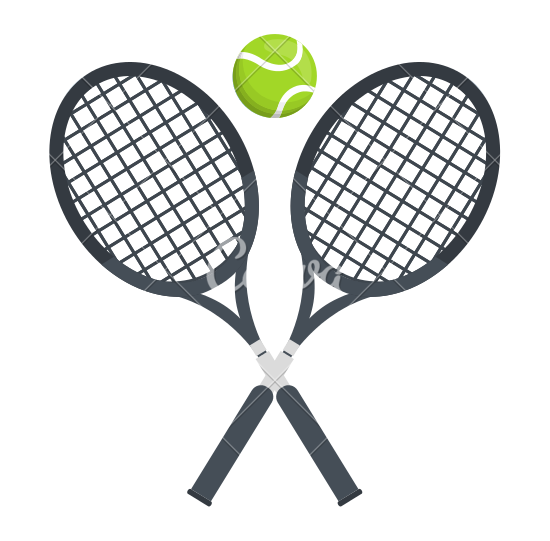
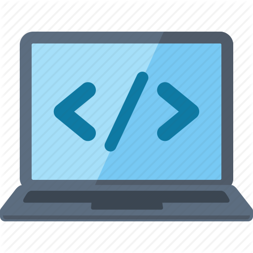

Fun Stuff

I first discovered the Rubik's cube when I was around 8 years old, through my cousin in China. Being a major nerd who loved puzzles even as a child, I was hooked instantly. Over the next few years I became faster and faster as I learned hundreds of algorithms that go into finding harmony out of the chaos. Now adays its become an enjoyable pastime and stress reliever. (Though I'm still set on breaking the sub-10s barrier)

I started Tennis at around 11 years old and grew to love the sport across the hours of practice that ensued over the next few years. Its a sport that has allowed me to meet many new friends and also lose a lot of the weight I had as a child. Although I am very competitive and am on the Varsity tennis team, I don't have any particular aspirations to go into it in college.

Programming is a huge passion of mine, but also a hobby in many senses. I love learning new languages and deepening my understanding of current ones even if it may not contribute to my future career. Despite the growth of website constructors, for instance, I continue to expand my skills in HTML, CSS, and Javascript, languages used in front end development. Partially because I believe in the versality of the languages but also for the fun of creating designs.